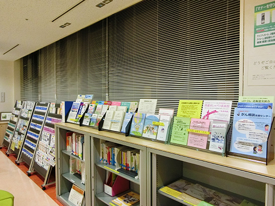
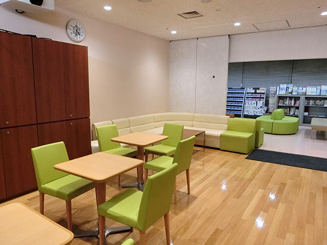

患者支援・広報部会は、「がん相談支援センター」を中心に活動を行っています。
がん相談支援センターでは、患者さんや家族あるいは地域の方々に、がんに関する情報を提供したり、相談にお応えしています。
また、がん患者さん、ご家族を対象としたがんサロン「なないろ」と、小児がん患者さんのご家族を対象とした「ゆるりサロン」を開催しております。
がん相談支援センター
がん相談支援センターでは、患者さんや家族あるいは地域の方々に、がんに関する情報を提供したり、相談にお応えしています。がん専門相談員としての研修を受けたスタッフが、がんの治療や療養生活全般の質問や相談をお受けしています。

相談内容（例）
-
- がんと診断されてこれからのことが不安
- がんの治療方法が知りたい
- 医師から治療の説明を受けたが、十分に理解ができない
- 治療費や生活費が心配
- セカンドオピニオンを受けたい
- 家族としてどう対応すればよいか
- 緩和ケア及び緩和ケア病棟のある病院について知りたい
- 今の不安を聞いてほしい
スタッフ
患者さん、ご家族の相談内容に応じて専門の医療スタッフが対応いたします。
（医療ソーシャルワーカー、看護師 等）
相談方法
- がん相談支援センターに直接お越しいただくか、またはお電話でご相談ください。
- 直接お越しいただく場合は、なるべく事前のご予約をお願いいたします。
- 相談は無料です。
- プライバシーを守るため、面談室でご相談をお聞きします。
- オンラインでの相談も実施しております。ご希望の方はまず電話にてご連絡下さい。
院内外問わず、がん患者さん、ご家族のご相談に対応いたします。
相談時間：平日 9:00～16:30（※2026年10月1日よりこちらの受付時間となります）
場 所：外来新棟1階
連絡先：011-706-7040（専用ダイヤル）

情報コーナーもあります

- がんに関する図書の閲覧が可能ですのでご利用ください。
- 独立行政法人国立がん研究センターがん対策情報センターが作成した「各種がんシリーズ」の冊子を用意しています。冊子は無料でお渡しできます。
- その他、がんの治療や療養に役立つパンフレットが自由にご覧になれます。
- ウィッグ（かつら）の見本やパンフレットがあります。
利用時間：平日 9:00～16:30（※2026年10月1日よりこちらの受付時間となります）
がんサロン
がんサロンなないろ

当院では、がん患者さん、ご家族を対象に「がんサロンなないろ」を開催しています。 病気について、治療について、仕事についてなど気がかりなことを、みんなでお話しする場所です。内容につきましては、院内掲示のポスターや、ホームページでご確認ください。
対象となる方
がん患者さんとご家族
開催日時
トップページの「お知らせ」よりご確認ください。
開催場所
外来新棟1階 腫瘍センター サロン
お申し込み方法
事前申込制です。時間内であれば途中からのご参加、ご退席は自由です。
お問い合わせ先
北海道大学病院腫瘍センター がん相談支援センター
TEL：011-706-7040
ゆるりサロン
当院では、小児がん患者様のご家族を対象に、ご家族同士が気兼ねなくお話しできる交流の場として「ゆるりサロン」を設けております。お気軽にお立ち寄りしていただける場を創っていきたいと考えておりますので、ぜひご参加ください。
対象となる方
小児がん患者様のご家族
開催日時
お問い合わせ下さい。
開催場所
外来新棟1階 腫瘍センター サロン
お申し込み方法
事前申込制です。時間内であれば途中からのご参加、ご退席は自由です。
お問い合わせ先
北海道大学病院腫瘍センター 小児がんチーム
TEL：011-706-7758
両立支援・就労支援
治療と仕事の両立支援
両立支援について
- ① がん相談支援センターに、両立支援コーディネーターの研修を受講した相談支援員を専任で配置し、がんを発症した患者の方々に対して、診断時から早期にニーズを把握し、継続的に適切な情報提供や相談支援を毎日（月～金）行っております。
- ② 患者の方々のおかれた事情を総合的に把握するためのツールとして、患者の治療、生活、勤務状況等がまとまっている「治療と仕事両立プラン（お役立ちノート）」等を活用し、主治医、会社・産業医等及び両立支援コーディネーターによる、トライアングル型サポート体制での両立支援を行います。
- ③ 必要に応じて、がん治療の専門医が、医学的な見地から、各診療科の調整・患者の方の診察や家族・会社の方々との面談に応じます。
- ④ ご希望に応じて、産保センターと連携し相談者及び職場へ助言をいたします。

対象となる方
- ① 今後のがん治療と仕事との両立について悩まれている方
- ② がん治療のために休職しこれから復職を考えている方
ご相談方法

支援内容
がん患者さんは、診断が確定してから、比較的短い間に、治療方法は手術か放射線治療か薬物治療か、外来で治療するか入院で治療するか、などを決定する必要があります。また、初回の治療方針が決まった後も、一定期間、病院への通院や短期入院を定期的に継続することもあります。そんな中で、治療と仕事の両立を目指した諸手続きを、ご自分ひとりで職場に説明して調整して決断するのは、時に大変な作業です。
- 両立支援コーディネーターが主治医と患者さんとよく相談のうえで、治療と仕事の両立の観点から、よい方法を、患者ご本人にご提案します。
- 患者さんからご希望があれば、職場のご担当者に職務内容をお聞きし、主治医らから治療内容を聞き、ご本人と相談したうえで、治療と仕事の両立の観点から最善と考えられる方法を、職場のご担当者への意見書として、主治医との連名で発行いたします。
主治医の意見書
以下に関して、患者さんのご希望に応じて、対応することができます。
- お勤め先等に記載していただく就労状況に関する書類「勤務情報（主治医提供用）」を、腫瘍センターでお渡しします。
以下からダウンロードしてご利用いただくことも可能です。
勤務情報（主治医提供用）(word) - お勤め先等に記載していただいた書類を参考に、スタッフが主治医・患者さんとご相談し、必要な支援を提供します。
- 患者さんのご承諾のもと、スタッフが主治医とお勤め先の間を調整し、「治療の状況や就業継続の可否等について主治医・両立支援外来医師の意見書」「職場復帰の可否等について主治医・両立支援外来医師の意見書」をご提供することができます。関係する診療科が多科にわたる場合には、全科との調整をしたうえで、意見書をご提供します。
費用
- 患者さんが、スタッフとご相談をするだけで十分な場合には、無料です。
- 当院では厚生労働省の定める療養・両立支援指導を行うことができる体制を整えております。お勤め先への意見書提出を行った場合には、初回については、月１回に限り、8,000円×（健康保険の自己負担率）となります。例えば３割負担の場合には、初回は１月あたり「8,000円×0.3＝2,400円」が、２回目以降については、３月間を限度として、１月あたり「4,000円×0.3＝1,200円」が医療費に加算されます。
ハローワーク職員による就労支援
ハローワークの職員が北海道大学病院で個別に就労支援をおこないます。
こんな悩みや不安はありませんか？
► 自分の病状や体力にあった仕事を見つけたい
► 治療と仕事の両立の仕方について教えてほしい
► 就職活動で、企業に病気のことを伝えるべきか迷っている
► 仕事を辞めた場合の雇用保険制度のことを知っておきたい
☞不安解消のためのご相談に応じ、必要な助言や情報提供をおこないます。
【日 時】毎月第４水曜日 ９時３０分～１２時３０分 ＊午前中のみ予約制
１３時３０分～１４時３０分
【対 象】北海道大学病院に通院・入院中のがん患者さんまたはご家族
【相談員】就職支援ナビゲーター（ハローワーク職員）がん相談員（北大病院）
【料 金】無 料
【場 所】北海道大学病院 がん相談支援センター面談室
【受付方法】・なるべく電話または来室にてご予約ください
・午前は予約に空きがあれば当日の相談も可能です
・午後は予約不要です。お気軽にご利用ください
ポスター（PDF）
ハローワーク相談希望票（PDF）
◆◇お問い合わせ・お申し込み先◆◇
がん相談支援センター 直通電話 ０１１－７０６－７０４０
希少がんホットライン
希少がんは、『罹患率（発生率）が人口10万人当たり６人未満、数が少ないがゆえに診療・受療上の課題が他のがん種に比べて大きいもの』と定義されています。
現在、わが国では191種類が希少がんに相当します。例えば、胃、大腸、乳腺などにできたがんでも珍しい組織型のものも希少がんになります。発生頻度が高い5大がん（胃、大腸、肺、乳腺、肝臓）に代表される主要ながんは、がん診療拠点病院の設置や診療ガイドラインの充実などにより、がん医療の均てん化（全国どこでもがんの標準的な専門医療を受けられるよう、医療技術等の格差の是正を図ること）が行われてきました。
一方、希少がんは、診断・治療の専門性・特殊性が高いものが多く、主要ながんのような均てん化が難しいことが課題となっています。しかし、全国どこにでも希少がんの患者さんはいます。
一つ一つの希少がんは稀ですが、全て合わせるとがん全体の約15%が希少がんになります。
希少がんホットラインでは、がん専門相談員（社会福祉士または看護師）が患者さん・ご家族、一般の方、医療機関等から希少がんに関するご相談をお受けします。
ホットラインの利用について
| 受 付 時 間 | 月曜・水曜・金曜（祝日を除く） 13：00 ～ 16：00 ※お急ぎの場合は上記以外の曜日、時間帯も留守番電話にお名前と 電話番号を残していただけますと相談員より折り返しいたします。 |
| 連 絡 先 | （ 011 ）706 - 8544 |
●相談時間は一人20分程度とさせていただきます。
●相談は無料です（通話料がかかります）
●相談内容の秘密は厳守いたします。
●正確な情報提供提供を行うため、氏名などの個人情報をお伺いすることがありますが、
答えたくない場合はその旨をお知らせ下さい。
相談できる内容の例
「受診病院では“まれ”ながんなので扱う診療科がないと言われた」
「どの診療科を受診すればよいかわからない」
「あまり情報がなく、概略を聞きたい」
「セカンドオピニオンを受けたい」
※内容によっては関連部署に確認し、後日回答する場合があります。
※専門的な内容や個別の判断を要する場合は、専門医の受診やセカンドオピニオンを
ご案内いたします
ポスター（画像クリックでPDFが開きます）
最終更新 2026年9月10日